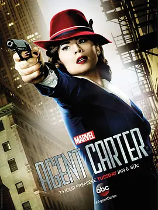

8.4
特工卡特 第一季
Agent Carter Season 1
2015
美国
评分 8.4
导演:
路易斯·德斯波西托 / 安东尼·罗素 / 乔·罗素 / 乔·庄斯顿
演员:
海莉·阿特维尔 / 詹姆斯·达西 / 查德·迈克尔·墨瑞 / 安维尔·乔卡亚 / 谢伊·惠格姆
类型:
冒险,动作,科幻
剧情简介
故事发生在二战刚刚结束的1946年。纽约街头仍带着动荡后的阴影，佩姬·卡特在拥挤的人群中穿行，精致外套下藏着她不容忽视的冷静与锋利。随着战场英雄相继返乡，她在秘密组织 SSR 内却屡遭轻视，办公室里被塞给的不是案卷，而是无休止的文书工作。然而每当夜色落下，她便悄然换上另一副面孔，替霍华德·斯塔克执行那些无法公之于众的任务。深夜的码头、昏暗的地下实验室、空旷仓库里的金属碰撞声——这些都是她真正活跃的舞台。卡特利用敏锐的判断与沉稳的身手追踪非法科技流向，往往在对方尚未反应过来时便已完成布局。面对同僚的质疑与制度的束缚，她既要隐藏行动，又要在微小的缝隙中争取主动，以证明自己不是被时代遗忘的“后勤角色”。随着调查不断深入，一股潜伏在纽约暗处的力量逐渐浮现。它牵动着战后科技、军方机密以及旧日宿敌的残留痕迹。卡特在每一次交锋中都能感到危险正逼近，而她必须依靠信念与技巧，在这座钢铁城市的阴影之间寻找真相，守住岌岌可危的平衡。